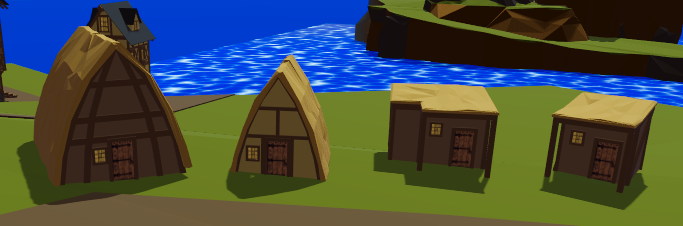

<article>
  <div class="container">
    <div class="row">
      <div class="col-lg-8 col-md-10 mx-auto">
        <p>
          New buildings are need, along with uv's for the roof portion.  they are nice right now but to flat. 
        </p>
        <p>
          I need to check and see what it would take or look like for a texture, or if i could make it procedural .
        </p>
        <p>
          I need grave yard area, with tomb stones and crypts (need an entrance and this will need to be designed out.)
          I need farm area
          I need a couple merchant areas for travelling vendors
          I need set position Shops
          need a Castle
          need a lighthouse
          need decks/docks and piers
          need small detail items
        </p>
        <p>
          <span>Hovels</span>
          
        <p>
        <p>Links:
          <ul style="list-style: none;">
            <li></li>
          </ul>
        </p>
      </div>
    </div>
  </div>
</article>